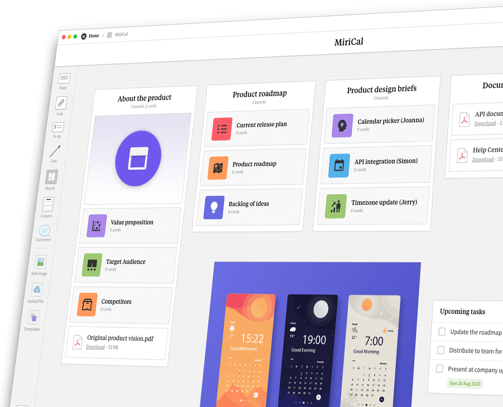
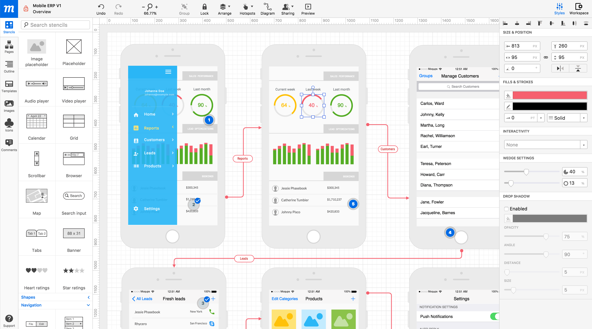
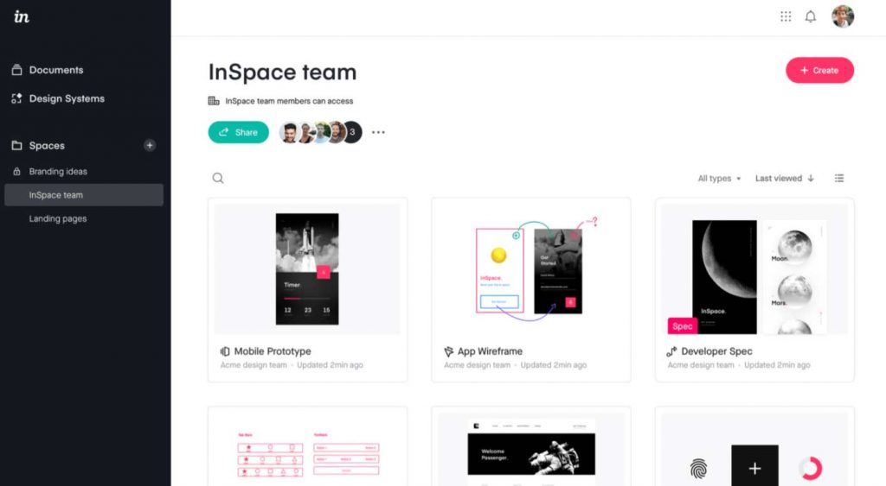

Un prototipo consiste en un boceto, navegable o no, que permiten crear una referencia visual de la estructura de una página web, definiendo al detalle el contenido y su distribución visual, organizando así la información a nivel de página.
El desarrollo del prototipo comienza con la definición de los objetivos que se quieren conseguir en la web, y con ellos crear una nueva estructura web.
Una vez esto, comenzará el diseño de wireframes o bocetos, con el fin de determinar el lugar donde situar los elementos principales de la web, pensando siempre en donde los espera encontrar el usuario.
En la fase final se realizará el prototipo navegable de toda la web, donde se verá toda la estructura de navegación, así como el diseño completo. El programador simplemente tendrá que replicarlo a través de código.
Características:
- El prototipo es la representación más detallada de la web y dispone de interactividad para comprobar el comportamiento y la experiencia de usuario.
- Es el diseño de más alto detalle y la última fase de conceptualización antes de la implementación web.
- Por norma general, los colores, las tipografías, los iconos, y demás artefactos gráficos utilizados en el prototipo serán los que se utilicen en la página web.
Algunos Ejemplos:
  References: t-position · eniun · Images by Picture-1 · Picture-2 · Picture-3